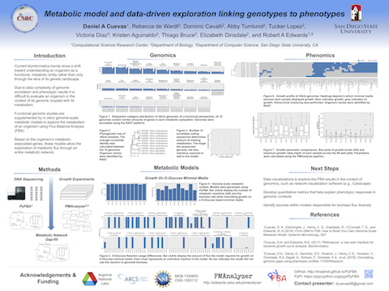
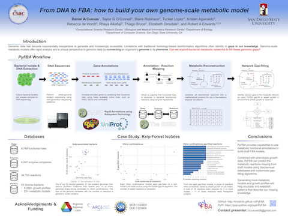
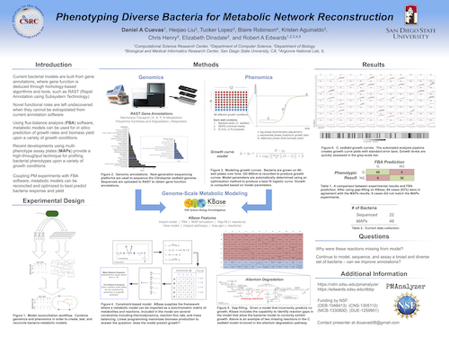
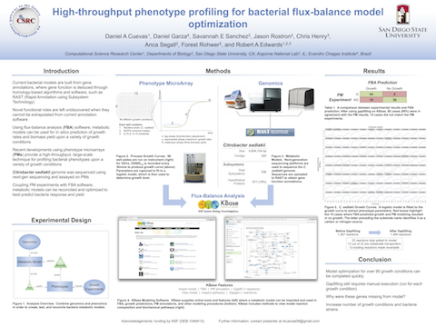
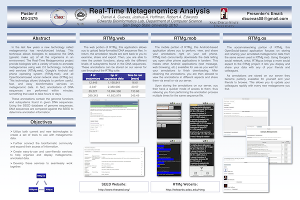

Toggle navigation
Daniel Cuevas
About
Research
Curriculum Vitae
Contact

2017
Metabolic model and data-driven exploration linking genotypes to phentoypes

2016
From DNA to FBA: how to build your own genome-scale metabolic model

2015
Phenotyping diverse bacteria for metabolic network reconstruction

2013
High-throughput phenotype profiling for bacterial flux-balance model optimization
2013
Measuring growth quality of bacteria using phenotypic microarrays

2010
Real-time metagenomics analysis